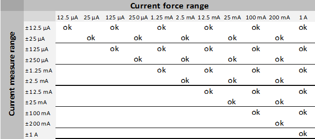
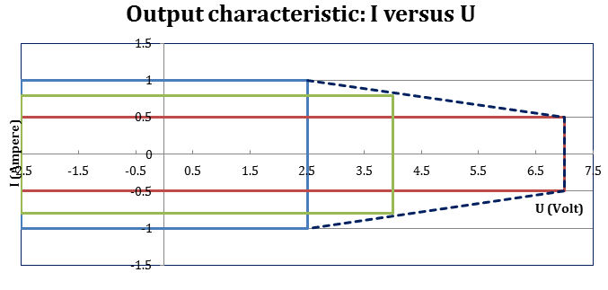

The DPS128/DPS64 card features two power domains
with a dedicated power budget. Each domain is able to deliver half of the
overall power budget. The power domain to channel mapping must be observed for
DPS128 cards when assigning the available channels to the DUT pins. For
more information refer to DPS128/DPS64 power
budget.
Parallel connection (ganging) possible for any number of successive channels
within a board.
Up to 64 ganging groups of successive channels are supported within each
card.
Maximum source/sink current per board cannot be exceeded.
Within a test head, a DPS128 card can be mixed with any other supported device
power supply.
Requires E7010E or E7010F Enhanced Diagnostics Interconnect Board.
E8023CS only: 32 boards per system only possible if 4 pogo-block version
E8023PC pogo cable is
used (2 channels ganged to 1 channel and 2.0A @2.5V per channel).
Supply voltage / current range specifications (high current)
Supported "current force" and "current measurement" range combinations
In voltage force mode, current measure range can be changed without prior
disconnect.

DPS128 power diagram high current
The programmed voltage determines the maximum current. If 7 V is programmed, the
maximum current is 0.5 A (red box), if 2.5 V is programmed the maximum
current is 1 A for all voltages below 2.5 V (blue box).
The power
diagram applies to an additional voltage drop in the Force path beyond the pogo pin
of ≤ 0.1 V.

For voltages between 2.5 V and 7 V (green box), the maximum current can be
calculated as follows:
Dynamic behavior
Explanation of terms:
Response time
Settling time after loadstep
at 2 V, settling into ±20 mV of programmed
value
Loadstep
1 µF
47 µF
100 µF
0.1 A to 1.0 A
20 µs
25 µs
30 µs
1.0 A to 0.1 A
20 µs
25 µs
30 µs
Voltage deviation after loadstep
Loadstep
1 µF
47 µF
100 µF
0.1 A to 1.0 A
320 mV
120 mV
85 mV
1.0 A to 0.1 A
500 mV
125 mV
85 mV
Settling wait times defined for DPS128 measurement ranging
The following wait times are to be considered when changing the DPS128 measurement
range:
Range settling time: The required wait time to achieve the specified
accuracy of the target range.
Auto-range execution time: The required wait time to allow the auto-range
algorithm to finish.
The following table shows the sum of the range settling time and the auto-range
execution time. These wait times are to be considered in the program. Potential
device related settling times need to be added on top.
On-, off-, change level- rate individually controlled for each
channel
DC profiling
DC profiling
Supported per channel for voltage and current profiles
Sample rate
Up to 100 ksps
Data analysis
Data analysis
raw data are stored on board without software interaction and may
be uploaded for further computation. Averaging, min and max number
are calculated and stored on board
Result analysis
built-in result analysis available that indicate the measurement
data is pass or fail against a user specified test limit
Surge tracker
Voltage or current surges are detected against programmable min. and max. values. The
surge tracker always checks against both high (positive) and low (negative)
thresholds, which can be set individually. Two flags indicate if thresholds have
been exceeded. These flags are latched (stored) and can be retrieved any time in the
testflow.
sequencer‑controlled (no external trigger pin
required)
1) Applies to test head with DUT Scale
interface and standard pogo block
2)Requires 4 averaging samples under
pattern control.
3) Up to 200 mA forced current, base calibration
and auto calibration period 1 month
4) Requires the use of a suitable API
for high accuracy force current mode and at least 1 Ω total
additional resistive load (incl. DUT) in the Force
path
5)Requires 16 averaging samples under
pattern control.
Maximum supported external capacitance to achieve accuracy is
220 µF. More samples required for larger capacitances.
6)Requires 16 averaging samples under
pattern control.
Maximum supported external capacitance to achieve accuracy is 47
µF. More samples required for larger capacitances.
7)Requires 16 averaging samples under
pattern control.
Maximum supported external capacitance to achieve accuracy is 15
µF. More samples required for larger capacitances.
8)Requires 16 averaging samples under
pattern control.
Maximum supported external capacitance to achieve accuracy is
4.7 µF. More samples required for larger capacitances.
9)Requires 16 averaging samples under
pattern control.
Maximum supported external capacitance to achieve accuracy is
2.2 µF. More samples required for larger capacitances.
10)Requires 64 averaging samples under
pattern control.
Maximum supported external capacitance to achieve accuracy is
4.7 µF. More samples required for larger capacitances.
11)Requires 64 averaging samples under
pattern control.
Maximum supported external capacitance to achieve accuracy is
2.2 µF. More samples required for larger capacitances.
12) It is recommended to place a low ESL capacitance
close to the pogo location. The detailed setup depends on the
configuration of the DUT interface board. For more details see
DPS128 / DPS64 capacitor requirements.
13) In addition to "Required external capacitance for high
frequency noise filtering".
 Download specifications PDF: V93000 SOC Device Power Supplies and VI Cards
Download specifications PDF: V93000 SOC Device Power Supplies and VI Cards